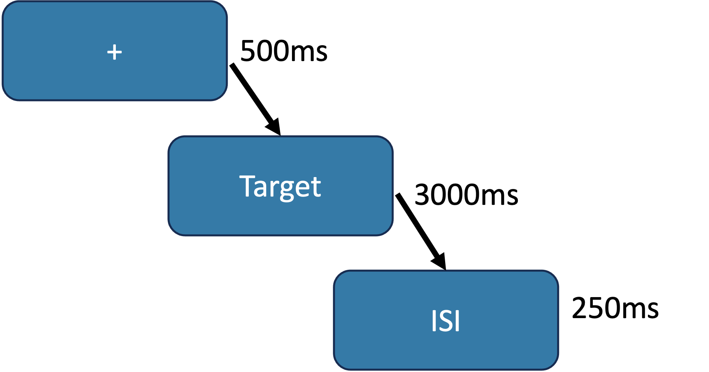

Psychology Labs and Resources

Department of Psychology
Flanker Task
Download TaskDescription
The Flanker Task is similar to the one described in Christ, Kester, Bodner and Miles (2011) and measures resistance to distractor interference.
A centrally placed arrow is flanked by four more arrows, two at each side. The flanker arrows either face the same direction as the central arrow (congruent) or face the opposite direction to the central arrow (incongruent).
Figure 1: A single trial in the Flanker Task

Reference
Christ, S. E., Kester, L. E., Bodner, K. E., & Miles, J. H. (2011). Evidence for selective inhibitory impairment in individuals with autism spectrum disorder. Neuropsychology, 25(6), 690.